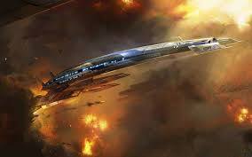

Mass Effect is a science fiction action role-playing third person shooter video game series developed by the Canadian company BioWare and released for the Xbox 360, PlayStation 3, and Microsoft Windows, with the third installment also released on the Wii U. The trilogy largely revolves around a soldier by the name of Commander Shepard, whose mission is to save the galaxy from a race of powerful mechanical beings known as the Reapers and their agents, including the first game's antagonist Saren Arterius. The first game sees Shepard investigating Saren, whom Shepard slowly comes to understand is operating under the guidance of Sovereign, a Reaper left behind in the Milky Way tens of thousands of years before, when the Reapers exterminated virtually all sentient organic life in the galaxy as part of a recurrent cycle of genocide for an unknown purpose. Sovereign is a vanguard whose purpose is to trigger the imminent return of the Reaper fleet hibernating in extra-galactic dark space, restarting the process of extermination. The second game takes place two years later, and sees Shepard battling the Collectors, an alien race abducting entire human colonies in a plan to help the Reapers return to the Milky Way. The final game of Shepard's trilogy centers on the war waging against the Reapers.
|  | |||
A trilogy of games has been released, each continuing the previous game's story in chronological order. The Mass Effect series combines action role-playing game elements, with the main series games being in third-person perspective. The protagonist can use two AI-controlled squad members in battle, which usually consist of members he or she has recruited from various places and for various reasons, and taken onto the Normandy, Shepard's starship. The player could make perspective decisions depending upon the situation. At these times, the player has multiple sets of dialogue choices with which to respond to NPCs, separated by tone. Starting from Mass Effect 2, the player can interrupt cut-scenes calmly or aggressively. The games often have various mini-games in them as well, such as drinking, dancing and romancing characters. Mass Effect takes place in a fictional version of the Milky Way, in which the galaxy is populated by several different species throughout its vastness. The galactic community partitioned the Milky Way into 5 different sectors, known as the Terminus Systems, the Attican Traverse, Inner and Outer Council Space, and Alliance Space. Earth is a significant setting particularly in the third installment, and another highly culminating setting is the space station known as the Citadel.
Mass Effect (2007), the first game in the series, was originally created as an exclusive title for the Xbox 360 but was later ported to Microsoft Windows by Demiurge Studios, and to the PlayStation 3 by Edge of Reality. The game focuses on the protagonist, Commander Shepard, and his or her quest to stop the rogue Spectre Saren Arterius from leading an army of sentient machines, called the Geth, to conquer the galaxy. During pursuit of Saren, Shepard learns of a far greater threat in the form of the Reapers. Saren has been mentally enslaved by the Reaper vanguard Sovereign, sent into Citadel Space to initiate the purge of all advanced sentient life in the galaxy, a cycle repeated by the Reapers every 50,000 years.
Mass Effect 2, the second main game in the series, was released on January 26, 2010 in North America and January 29 in Europe. A great deal of secrecy surrounded the game prior to launch, with few details emerging other than Casey Hudson, Project Director for BioWare, stating that "players should keep their save files, because decisions made by the player in the first game will continue to have influences on their character in the sequel." The game takes place two years after the events of Mass Effect. Human colonies are being attacked, their colonists disappearing without a trace. The game's protagonist, Commander Shepard, is forced into an uneasy alliance with the pro-Human paramilitary organization, Cerberus, in an effort to discover the cause. Evidence emerges pointing to the 'Collectors', an advanced, enigmatic race of insect-like humanoids. Adding to the threat is the revelation that the Collectors are working for the Reapers. Shepard sets out on a "suicide mission" to stop the Collectors, accompanied by a hand-picked team of soldiers, assassins, mercenaries, and specialists. Mass Effect 2 has received overwhelming critical and public praise since its release, for its characters, storyline, voice acting, and refined combat and gameplay with many critics calling it a major improvement over the original and an easy Game of the Year contender despite its January release. At Gamescom 2010, it was announced that a PlayStation 3 version would become available, which was released on January 18, 2011.
Mass Effect 3, the third and final installment in the Mass Effect trilogy, was released on March 6, 2012. Casey Hudson commented that Mass Effect 3 "will be easier [to develop] because we don't have to worry about continuity into the next one." However, decisions are routinely imported from the two previous titles to Mass Effect 3 in order to maintain continuity within the series. In the final chapter of the trilogy, the Reapers have returned in force, and have begun their purge of the galaxy, attacking Earth. During this attack Commander Shepard is on Earth and forced to flee. After fleeing Earth, Commander Shepard must hurry and rally the advanced races of the galaxy to make one final stand, not only to save Earth, but also to break a cycle that has continued for millions of years (hence providing the answer to Fermi's Paradox). The first official trailer was unveiled on December 11, 2010 during the Spike TV Video Game Awards.